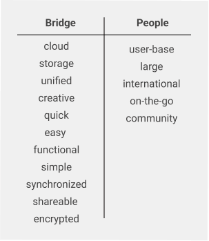
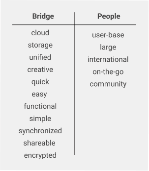

What worked?
Clear icons, label
Easy export to other cloud system
Organization/Easier navigation
Security when sharing
Collaborating
What didn't
Need to explore more color logo options / + button location
What were your doubts going into the project?
How would mine stand out in the saturated cloud storages market?
What surprised you the most?
“Get Started button” This sometimes hinders users from scrolling down and reading the rest of the landing page information. Users click the Get Started button immediately instead.
What would you have done differently if given more time?
I would do A&B Testing on the “Get Started’ button specifically and on more variety of users.
What did you learn while doing this project?
Testing is key!! Style guide may change once A&B Testing kicks in (my font color, icons, etc.).
How will you use that information in the future?
Learn to trust the research process. Sometimes you may have a strong opinion about a design, but it won’t work ultimately. You need to learn to let it go (ex: landing page layout; Get Started CTA button).


 
